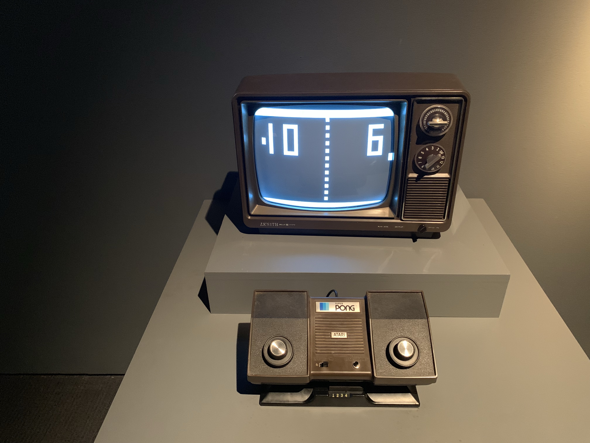

the exhibit in the third floor was split between movie equipment and video games. in this page i'll be talking about the video games.
The third floor was filled with different concoles ranging from Xbox,PS consoles, and wii, to old arcade machines and old consoles too like the atari.
During my visit i was many different consoles that peeked my interest was the animation in some of the games. For example i took a few photos that compare real life baseball and the animation verion of it.


If you look to the left side where the animation is at the bootom of the photos you can see the year the game was made and for which console its for. But not only that you can see that all three photos the animation of it improved through out the years.
1 3 4